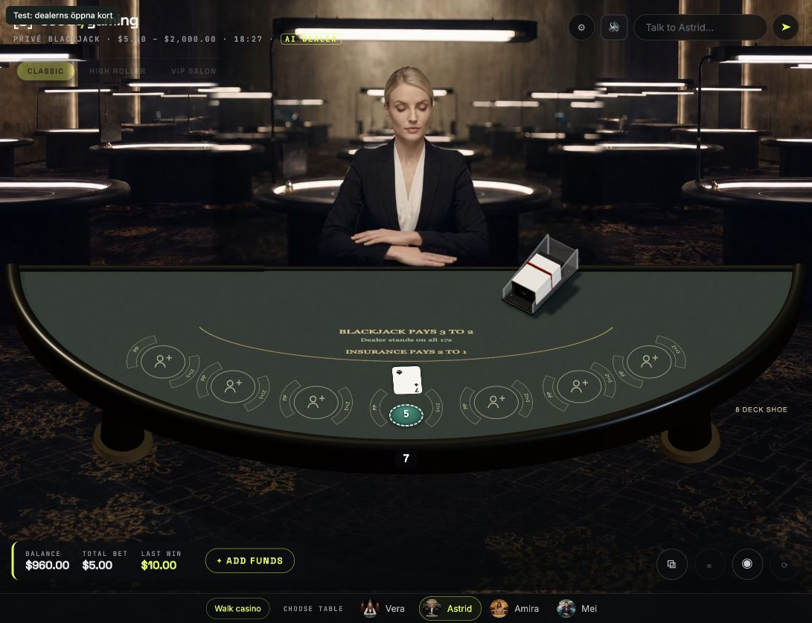
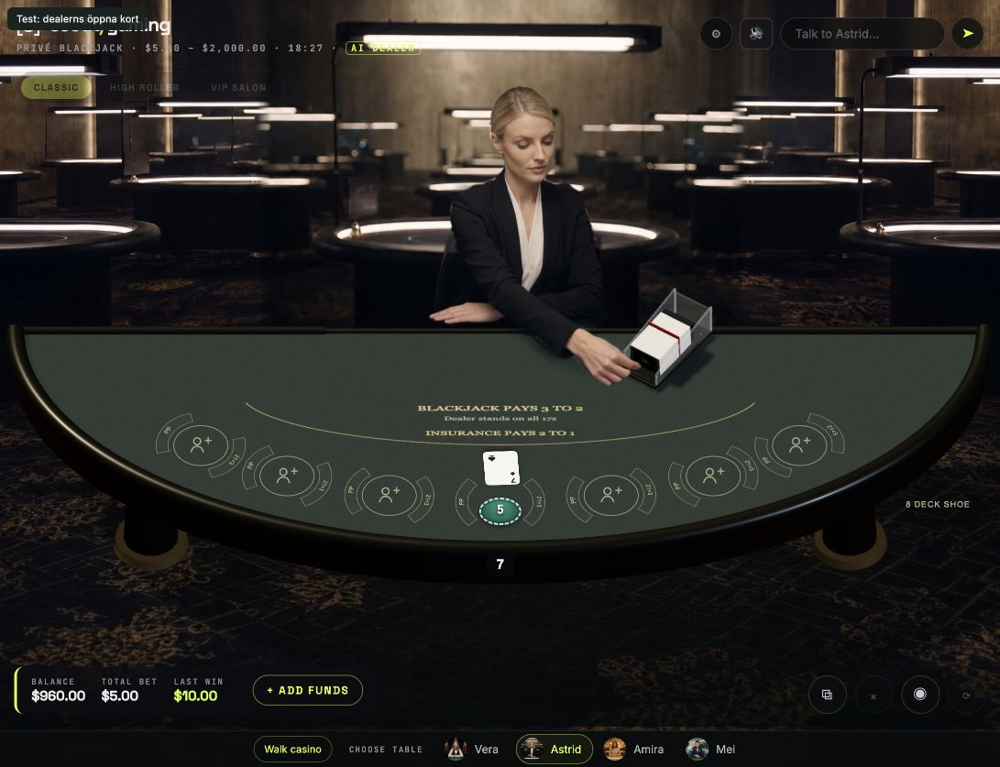
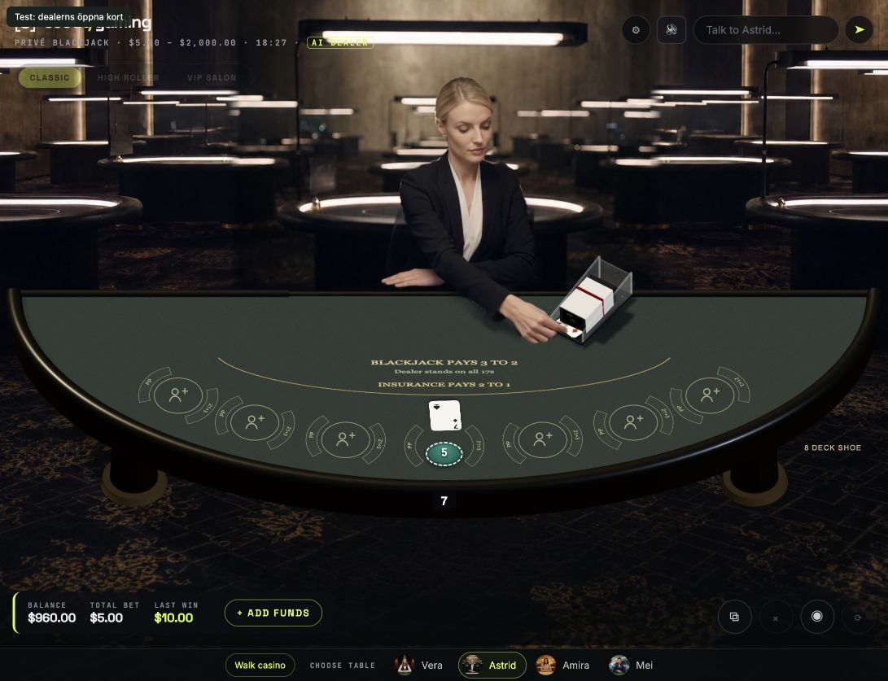
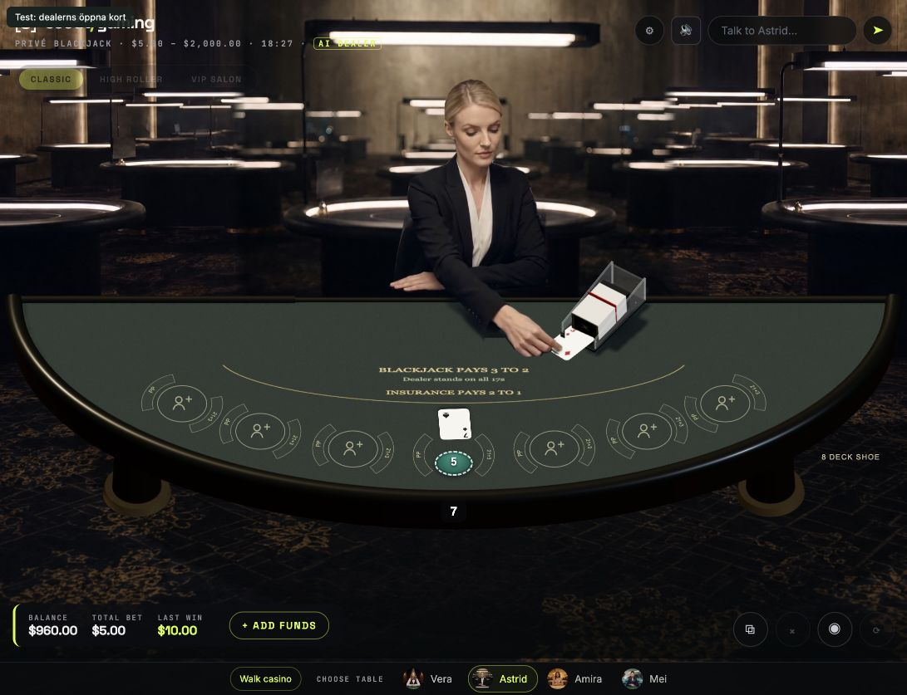
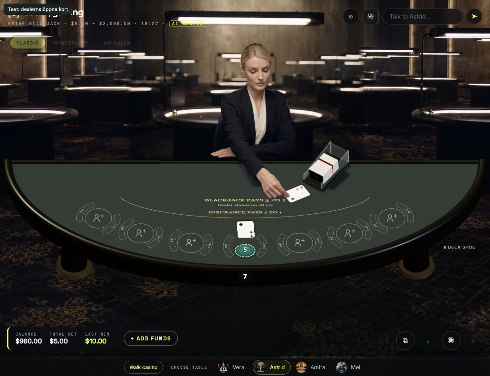
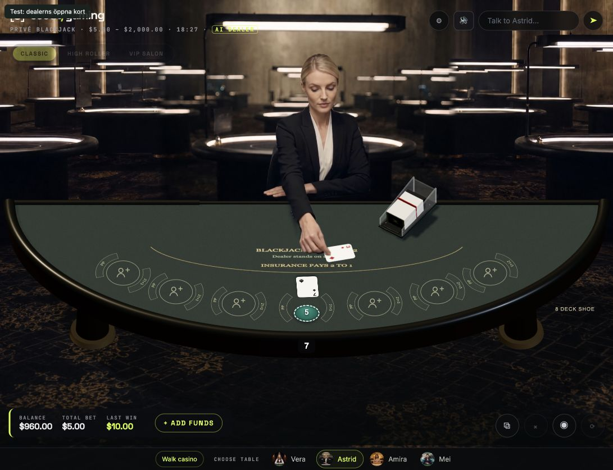
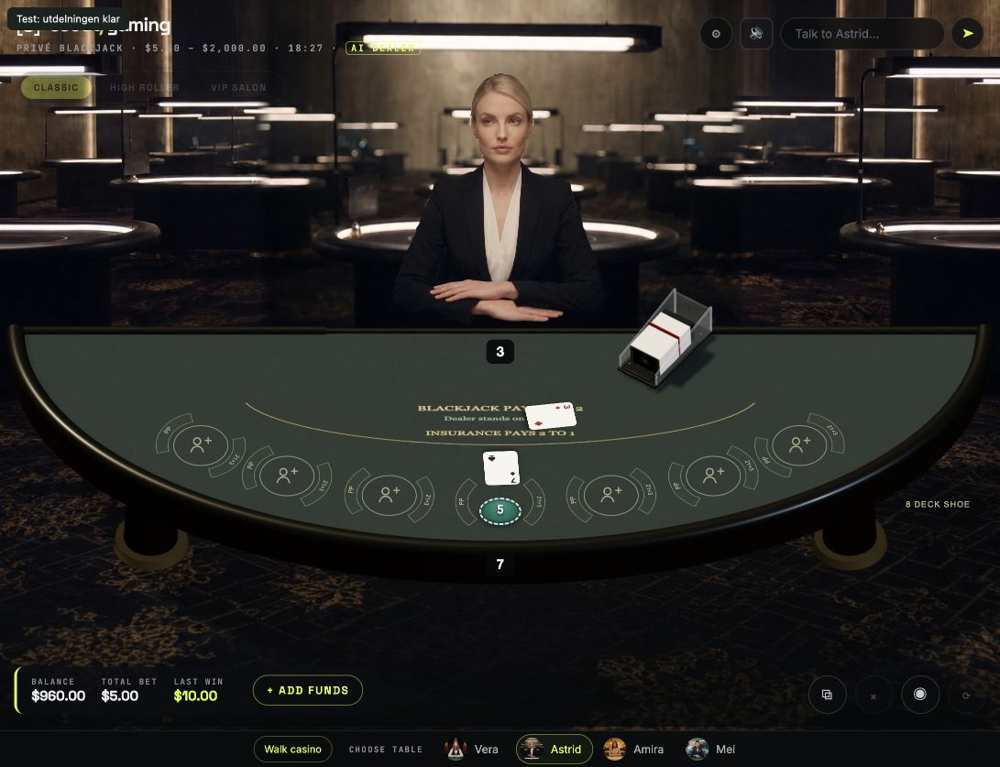

14 september · befintligt material · inga nya genereringskrediter
Faktiska skärmbilder från en spelrunda. Dealerns första öppna kort dras från skon och placeras på bordet. Bilderna är stickprov nära angivna bildrutor, inte bevis på jämn 60 fps.
Kvar: tappade bildrutor, små maskrester och övergångar. Senare kort och övriga platser är ännu inte ersatta.






